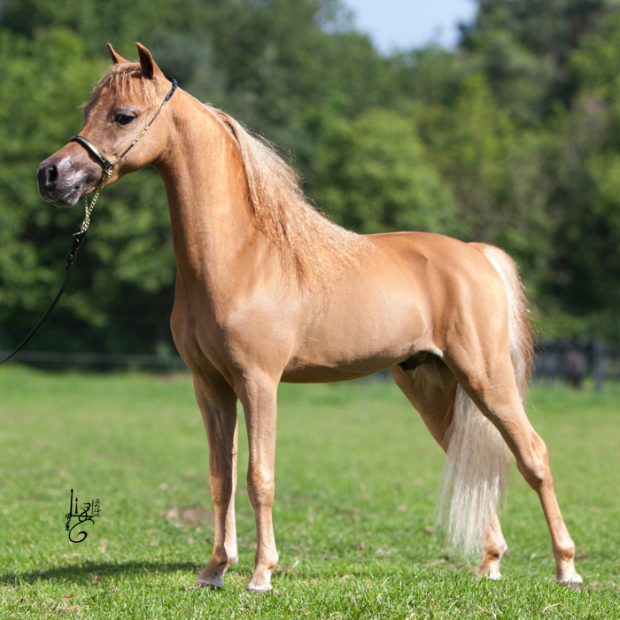
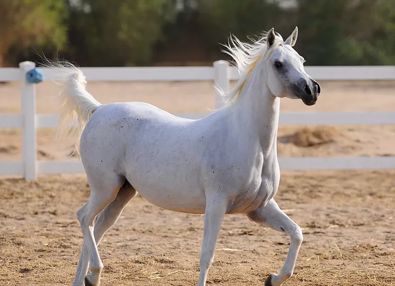
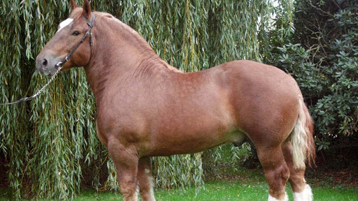

Horses Types
American Quarter Horse
Embraced by beginners and professional equestrians all around the world, the American quarter horse is famous for its agility, docility, and athleticism. Originally bred from English thoroughbreds and Native American Chickasaw horses during the 1600s, it has the largest breed registry in the world. These horses are shining stars on the trail and in the show ring.
Arabian
The Arabian has the oldest horse breed registry in the world. Its lineage goes as far back as 3000 B.C. In fact, every light horse breed, including Appaloosas, Morgans, and Andalusians, can trace their ancestry back to the Arabian. It can be a rather spirited horse breed, but it's also loving and loyal.
Thoroughbred
Thoroughbreds are the most popular racing horse in North America. This breed is considered a "hot-blooded" horse, which means it's known for its agility, speed, and spirit. It's a fine multipurpose horse that often has a career in other equestrian competitions besides racing, such as dressage and jumping, or it lives its life as a companion animal.
Draft Breeds
Draft horses are cold-blooded, heavy horses known for doing work pulling heavy loads. Historically, they were also used in battle to carry the weight of heavily armored soldiers. These horses have thick coats and manes that enable them to endure cold weather, and they're not easily spooked. The Clydesdale, Percheron, Shire, and Belgian are some popular examples of these gentle giants. In addition, draft horse crossbreeds can be ideal first horses, as they're often docile and loving.